이 글은 KBS 추적60분 1454회 **「안전공업 화재 참사 - 우리는 모두 알고 있었다」**를 보고 정리한 글입니다.
원본 영상: YouTube - KBS 추적60분
글에 사용한 방송 캡처의 저작권은 KBS에 있으며, 비평·기록·인용 목적으로 사용했습니다.
2026년 3월 20일 오후, 대전 대덕구의 한 공장에서 불이 났습니다.
처음에는 또 하나의 화재 뉴스처럼 보였어요. 소방차가 출동했고, 화면에는 검은 연기가 올라왔고, 뉴스 자막에는 ‘공장 화재’라는 익숙한 단어가 붙었습니다.
그런데 KBS 추적60분이 다시 들여다본 이 사고는 단순한 화재가 아니었습니다. 14명이 돌아오지 못했습니다. 더 무서운 건, 방송 제목처럼 이 참사 앞에 이런 문장이 붙었다는 점이에요.
“우리는 모두 알고 있었다.”
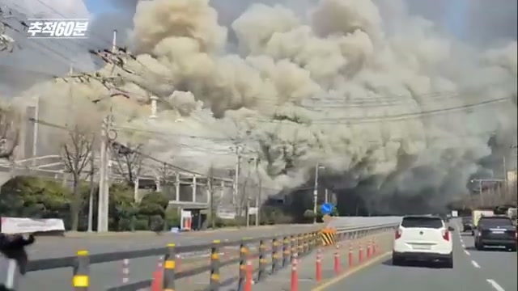
화재 신고 전화로 시작되는 방송의 첫 장면. 이 사고는 ‘갑자기 난 불’보다 ‘오래 쌓인 위험’에 가까웠습니다.
방송의 첫 장면에는 긴박한 신고 음성이 나옵니다.
“지금 앞이 안 보여.”
— KBS 추적60분, 00:00:11 부근
짧은 한마디인데, 이 사고의 공포가 그대로 들어 있습니다. 불이 난 사실보다 더 무서운 건, 그 순간 현장 안에서 사람들이 어디로 움직여야 할지 보기 어려웠다는 점이에요.
정말 몰랐을까요.
아니면 위험 신호를 보고도 멈추지 못했던 걸까요.
오늘 글은 안전공업 화재 참사를 하나의 사고 뉴스가 아니라, 우리 사회가 반복해서 놓치고 있는 산업안전의 구조로 읽어보려 합니다.
Q. 이 사고, 정확히 무슨 일이었나요?
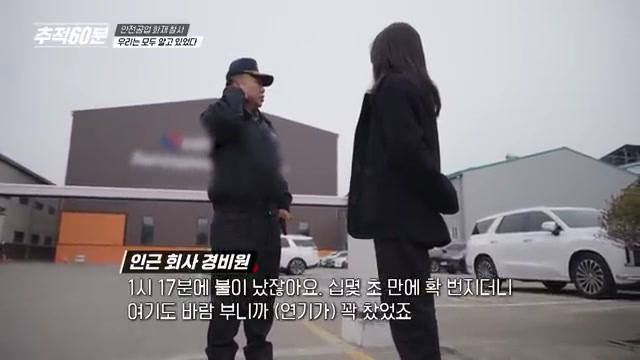
불은 빠르게 번졌고, 현장은 순식간에 연기와 화염으로 뒤덮였습니다.
방송은 화재 직후 상황을 이렇게 전했습니다.
“미처 빠져나오지 못한 직원들은 창문으로 뛰어내리면서 부상을 입기도 했습니다.”
“28시간이 지난 다음 날 저녁에서야 실종자 14명의 시신을 수습할 수 있었습니다.”
— KBS 추적60분, 00:02:43·00:03:11 부근
방송에 따르면 불은 순식간에 확산됐습니다. 공장 내부에는 기름때, 배관, 위험물, 복잡한 구조물이 얽혀 있었고, 소방 인력과 장비가 대거 투입됐지만 결과는 너무 참혹했습니다.
사망 14명.
숫자로 쓰면 짧습니다. 하지만 그 숫자 뒤에는 퇴근을 기다리던 가족, 아이, 배우자, 부모가 있었어요.
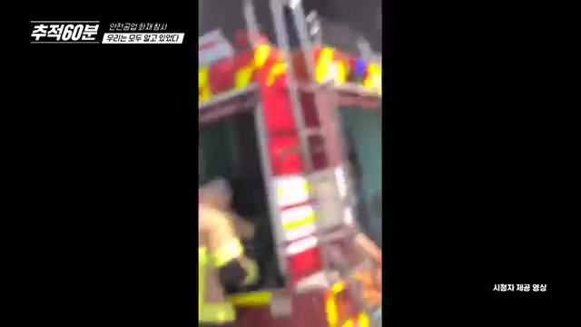
누군가는 창문으로 겨우 빠져나왔고, 누군가는 끝내 빠져나오지 못했습니다.
이 장면이 중요한 이유는 단순합니다. 화재에서 생사를 가른 것이 단지 ‘운’만은 아니었기 때문입니다.
경보가 제때 믿을 만하게 작동했는지, 대피로가 충분했는지, 내부 구조가 빠져나오기 쉬웠는지, 위험물이 제대로 관리됐는지. 이런 것들이 결국 사람의 생존 가능성을 갈랐습니다.
Q. 왜 이 사고가 더 마음에 남나요?
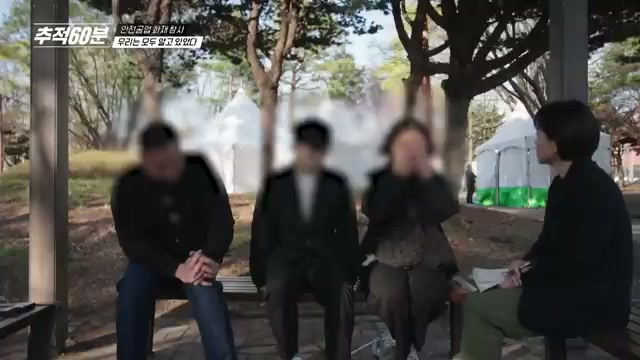
방송에서 가장 오래 남는 장면 중 하나는 유족의 인터뷰였습니다.
방송에서 유족은 다섯 살 막내가 아직 아빠의 죽음을 이해하지 못한다고 말했습니다. 가족들은 “설마 못 나오겠어?” 하며 기다렸지만, 그는 끝내 돌아오지 못했습니다.
“신랑이 안 나오고 있는데 연기가 너무 많이 나는 거예요. 그래도 설마 못 나오겠어? 기다리고 있었는데…”
— 유족 인터뷰, 00:05:32 부근
그리고 이어지는 말이 더 아팠습니다.
“아빠가 하늘나라에 갔다고 얘기하니까, 아빠는 하늘나라에서 올 때 뭘 타고 오느냐고…”
— 유족 인터뷰, 00:05:54 부근
이런 사고를 볼 때 우리는 자꾸 ‘안전관리’, ‘법 위반’, ‘소방 점검’ 같은 단어로 말하게 됩니다. 필요한 말입니다. 하지만 그 전에 이건 누군가의 아빠가 집으로 돌아오지 못한 사건입니다.
산업재해는 통계가 아니라, 가족의 시간이 끊기는 일입니다.
그래서 이 사고를 숫자로만 기억하면 안 됩니다.
Q. 사고 당일, 왜 대피가 늦어졌나요?
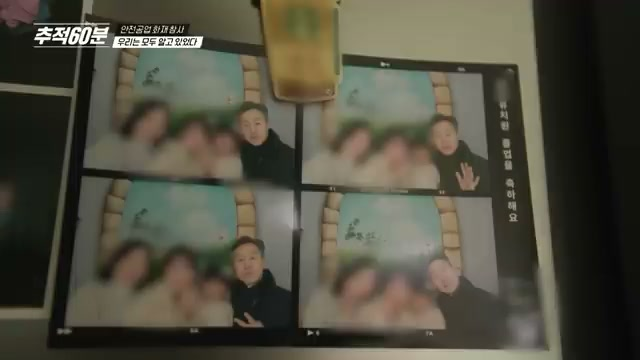
사고 당일 상황을 재구성한 장면. 쟁점은 불이 난 순간만이 아니라, 사람들이 위험을 어떻게 받아들였는가였습니다.
방송과 관련 보도에서 반복해서 나온 쟁점은 경보와 대피였습니다.
화재 경보가 울렸지만 금방 꺼졌고, 일부 직원들은 평소 오작동처럼 여겼다고 합니다. 여기서 핵심은 경보기 기계 하나가 아닙니다.
현장이 이미 이렇게 학습해버렸다는 점이에요.
“또 아니겠지.”
경보는 울리는 것만으로 충분하지 않습니다. 사람들이 그 경보를 믿고 바로 움직일 수 있어야 합니다. 경보가 자주 오작동하고, 그 상태가 방치되면 진짜 사고가 났을 때도 위험 신호는 위험 신호로 받아들여지지 않습니다.
화재 현장에서 몇 초, 몇 분은 생사를 가릅니다.
이 차이가 엄청납니다.
방송이 확인한 전현직 직원 증언은 더 무겁습니다.
“경보기가 울리면 일단 경보기부터 끄고 화재 여부를 확인하는 게 일상이었다.”
— KBS 추적60분, 00:25:29 부근
경보는 사람을 움직이게 해야 합니다. 그런데 경보가 먼저 꺼지고, 확인이 나중이 되는 문화가 굳어지면 진짜 화재 순간에도 사람들은 머뭇거리게 됩니다.
Q. 공장 안에는 어떤 위험이 쌓여 있었나요?
추적60분은 미공개 공장 내부 사진을 바탕으로 사고 전 현장의 위험 요소를 짚었습니다.
방송을 보면서 가장 무서웠던 건, 이 화재가 어느 날 갑자기 떨어진 재난처럼 보이지 않았다는 점입니다.
현장은 오래전부터 위험 신호를 보내고 있었습니다. 노동자들은 불안감을 느꼈고, 공장에는 화재 위험 요소가 쌓여 있었고, 구조는 점점 복잡해졌습니다. 하지만 그 신호가 실제 개선으로 이어지지 못했습니다.
방송은 안전공업에서 지난 15년 동안 소방 당국이 출동할 정도의 화재가 여러 차례 있었다고 전했습니다. 그 원인으로 기름때와 분진도 언급됐습니다.
“지난 15년간 안전공업에서 소방 당국이 출동할 정도의 화재가 발생한 건 모두 일곱 번. 대부분 집기에 엉겨붙은 기름때와 분진이 원인이었습니다.”
— KBS 추적60분, 00:17:34 부근
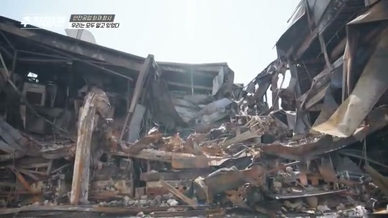
무너진 철골은 사고 이후의 장면이지만, 동시에 사고 이전에 방치된 위험을 보여주는 증거처럼 보였습니다.
살아 있을 때는 잘 보이지 않던 위험이, 죽음 이후에야 증거가 되는 구조.
이게 반복되는 산업재해의 가장 잔인한 패턴입니다.
Q. 기름때와 전선은 왜 중요한 단서인가요?
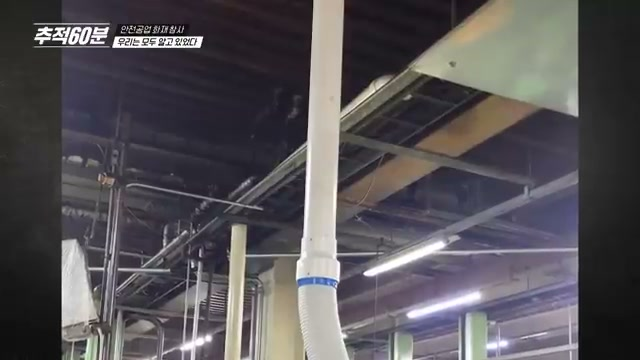
기름때와 배선 문제는 작은 관리 부실처럼 보이지만, 화재 상황에서는 불길이 이동하는 길이 될 수 있습니다.
공장에서 기름을 쓰는 것 자체가 이상한 일은 아닙니다. 문제는 그 기름이 어떻게 관리됐느냐입니다.
기름때가 쌓이고, 환기가 부족하고, 배관이나 전선 주변에 위험 요소가 누적되면 불은 한 지점에서 끝나지 않습니다.
불은 길을 찾습니다.
기름때가 길이 되고, 배관이 길이 되고, 샌드위치 패널과 복잡한 구조물이 길이 됩니다. 그 결과 사람에게 남는 길은 점점 사라집니다.
그래서 이 사고를 “불이 났다”로만 보면 안 됩니다. 불이 날 수밖에 없는 조건, 불이 번지기 쉬운 조건, 사람이 빠져나오기 어려운 조건을 함께 봐야 합니다.
Q. 왜 빠져나오기 어려웠나요?
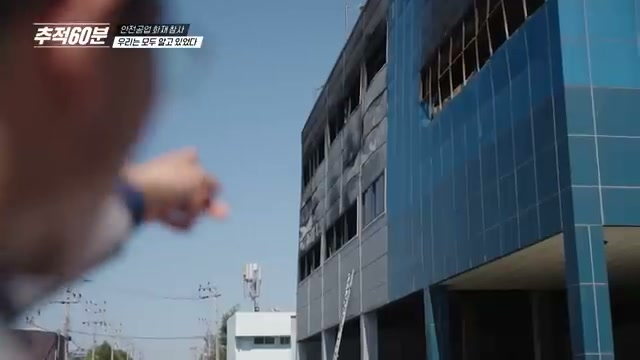
대피가 어려웠던 이유는 하나가 아니었습니다. 여러 개의 약한 고리가 동시에 끊어졌습니다.
대피가 어려웠던 이유는 하나로 정리되지 않습니다. 방송에는 화재 전문가의 설명도 나옵니다.
“검은 연기가 나옵니다. 거의 앞이 보이지 않는 상황. 유독가스를 한 모금만 마셔도 몸이 경직돼서, 마음은 빨리 대피하려고 하는데 몸이 따라주지 않는 상황이 되는 것이죠.”
— KBS 추적60분, 00:18:02 부근
그래서 대피 실패는 ‘왜 빨리 안 나왔나’로 물을 수 있는 문제가 아닙니다. 구조와 연기, 경보와 동선이 사람의 움직임을 빼앗아 간 겁니다.
대피가 어려웠던 이유는 여러 겹이었습니다.
- 경보가 제대로 신뢰되지 않았습니다.
- 연기와 불길이 빠르게 확산됐습니다.
- 내부 구조가 복잡했습니다.
- 일부 공간은 대피로가 충분하지 않았습니다.
- 불법 증축·복층 구조 문제가 드러났습니다.
재난은 보통 한 가지 원인으로 터지지 않습니다. 작은 구멍들이 여러 겹 겹치다가, 어느 날 한꺼번에 열립니다.
이 사고도 그랬습니다.
누군가 한 번만 더 점검했다면, 누군가 위험 신호를 실제 조치로 연결했다면, 누군가 “괜찮겠지”를 멈췄다면 결과가 달라졌을지도 모릅니다.
Q. 불법 증축은 왜 생존 문제인가요?
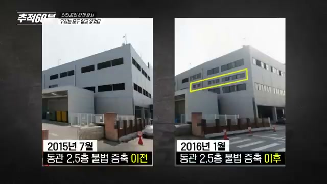
방송에서 충격적이었던 대목 중 하나는 ‘서류상 없는 공간’이었습니다.
공간 효율을 높인다는 이유로 복층 구조물이 만들어졌고, 일부는 불법 증축으로 드러났습니다. 여기서 문제는 단순히 “허가를 안 받았다”가 아닙니다.
방송은 이렇게 설명합니다.
“처음 지어질 때만 해도 단층이었던 건물. 이후 2, 3층을 증축했고, 서류상엔 없는 공간들이 덧붙여지기 시작했습니다.”
“불법으로 공간이 증축되면서 대피가 어려워진 겁니다.”
— KBS 추적60분, 00:20:52·00:21:37 부근
도면에 없는 공간은 점검에서 빠질 수 있습니다. 소방 계획에서 빠질 수 있습니다. 실제 화재가 나면, 그곳에 사람이 있다는 사실을 늦게 알 수 있습니다.
건축법 위반은 행정 서류 문제가 아닙니다.
불이 나면 생존 확률의 문제입니다.
도면에 없는 공간은 평소에는 작업 공간일 수 있지만, 사고 순간에는 구조의 사각지대가 됩니다.
Q. 나트륨 이야기는 왜 나왔나요?
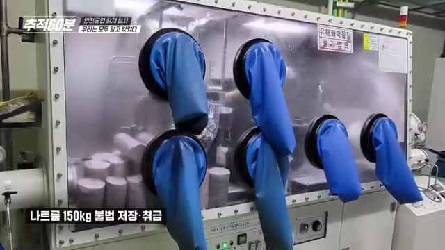
방송은 위험물 관리 문제도 함께 짚었습니다. 자막에는 허용 기준 15배에 해당하는 나트륨 적발 내용이 나옵니다.
나트륨은 물과 격렬하게 반응할 수 있는 물질입니다. 그래서 일반 화재처럼 “물을 뿌리면 된다”는 식으로 접근하기 어렵습니다.
방송에는 직원이 느꼈던 불안도 짧게 나옵니다.
“여기 있으면 안 되는데라는 생각도 했고… 조금만 문제 생겨도 큰일 날 것 같다는 생각이 들었습니다.”
— 직원 증언, 00:31:30 부근
그리고 이어서 이런 사실이 제시됩니다.
“당시 소방 당국은 허용 기준 15배에 해당하는 나트륨을 적발해 이송하도록 했습니다.”
— KBS 추적60분, 00:31:44 부근
위험물은 존재 자체보다 관리 방식이 중요합니다.
위험물을 쓰는 회사라면, 그 위험을 전제로 공간, 소방, 대피, 교육 시스템을 더 촘촘하게 짜야 합니다. 그런데 현실은 반대였던 것처럼 보입니다.
위험은 커졌는데, 안전은 따라오지 못했습니다.
이 문장이 이 사고의 핵심에 가깝습니다.
Q. 이 사고가 더 무서운 이유는 뭔가요?
이 사고가 무서운 이유는 고립된 사건이 아니기 때문입니다.
방송은 아리셀 참사와도 연결해 보여줍니다. 노동자들이 위험을 알고 있었고, 사고 전 신호가 있었고, 구조와 관리의 문제가 있었고, 사고 뒤에야 모두가 “왜 막지 못했나”라고 말하는 패턴이 반복됩니다.
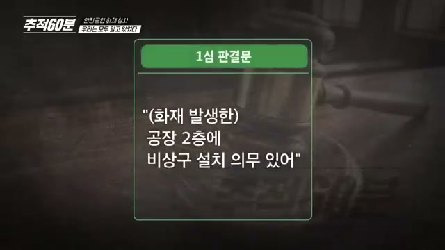
아리셀 참사 이후에도 질문은 비슷했습니다. 왜 위험 신호는 사고 전에는 멈춤으로 이어지지 못했을까요.
아리셀 참사 이후에도 질문은 같았습니다.
“왜 또 죽었나?”
질문이 반복된다는 건, 답도 반복해서 외면됐다는 뜻입니다.
중대재해처벌법이 생겼습니다. 점검도 있습니다. 신고도 있습니다. 보도도 있습니다. 하지만 현장에서 실제로 바뀌지 않으면 법은 종이 위에서만 존재합니다.
방송 말미의 한 설명은 이 반복 구조를 정확히 짚습니다.
“불법 구조 변경, 위험물 관리, 화재에 대한 기본적인 대피 매뉴얼, 비상로가 제대로 마련되지 않았다는 문제들이 공통점이라고 할 수 있습니다.”
— KBS 추적60분, 00:36:39 부근
Q. 그럼 결국 누구 책임인가요?
책임을 한 사람에게만 몰아가면 편합니다.
“그 회사가 문제였다.”
맞는 말일 수 있습니다. 하지만 거기서 멈추면 다음 사고를 막기 어렵습니다. 이 사고의 질문은 더 커야 합니다.
- 위험 신고는 왜 충분히 작동하지 않았을까요?
- 소방 점검은 왜 핵심 위험 공간을 놓쳤을까요?
- 불법 증축은 왜 사고 전까지 방치됐을까요?
- 노동자가 위험을 말했을 때 왜 실제 개선으로 이어지지 않았을까요?
- 경영진에게 안전은 비용이었을까요, 생명이었을까요?
사고는 현장에서 났습니다. 하지만 사고를 만든 조건은 훨씬 넓게 퍼져 있었습니다.
책임은 사고 뒤에 묻는 말이지만, 안전은 사고 전에 작동해야 하는 시스템입니다.
Q. 저는 이걸 보고 무엇을 할 수 있었나요?
대전 화재 피해와 관련해 사회복지공동모금회 쪽으로 보낸 기부 기록입니다.
뉴스를 보고 마음이 무거웠습니다. 그래서 작게나마 기부를 했습니다. 사진 속 내역은 하나은행에서 사회복지공동모금회 쪽으로 보낸 기부 기록이고, 금액은 1,000,000원입니다.
솔직히 이걸 올리는 게 조심스럽습니다. 기부를 자랑하려는 글처럼 보일까 봐서입니다. 그래도 넣는 이유는 하나예요.
이런 참사는 보고 분노하는 데서 끝나면 너무 빨리 잊힙니다. 누군가는 기록하고, 누군가는 말하고, 누군가는 제도를 바꾸라고 요구하고, 누군가는 가능한 방식으로 유가족과 피해자 곁에 서야 합니다.
제가 한 일은 아주 작습니다.
하지만 아무것도 하지 않는 것보다는 낫다고 믿습니다.
결국 질문은 이것입니다
“우리는 모두 알고 있었다.”
이 말은 누군가를 비난하기 위한 문장이기도 하지만, 동시에 우리 사회 전체에 던지는 질문입니다.
위험을 알았을 때 멈출 수 있는가.
노동자가 불안하다고 말했을 때 들을 수 있는가.
비용이 생명보다 앞서려 할 때 제동을 걸 수 있는가.
화재는 2026년 3월 20일에 났습니다. 하지만 참사의 재료는 그보다 훨씬 오래전부터 쌓이고 있었습니다.
그래서 이 사고는 한 공장의 화재가 아닙니다.
안전이 비용으로 밀려날 때, 어느 현장에서든 다시 일어날 수 있는 일입니다.
다시는 “알고 있었다”는 말을 사고 뒤에 하지 않았으면 좋겠습니다.
알았으면, 그 전에 멈춰야 합니다.
참고한 자료
- KBS 추적60분 1454회, 「안전공업 화재 참사 - 우리는 모두 알고 있었다」
- 영상 자막 발췌: YouTube 한국어 자막을 기준으로 시간대를 확인하고, 명백한 자동자막 오탈자는 문맥에 맞게 보정
- SBS 보도: 안전공업 화재 경보기·위험물 관련 보도
- 한겨레 보도: 불법 증축 및 대피 구조 관련 보도
- KBS 뉴스 및 관련 언론 보도